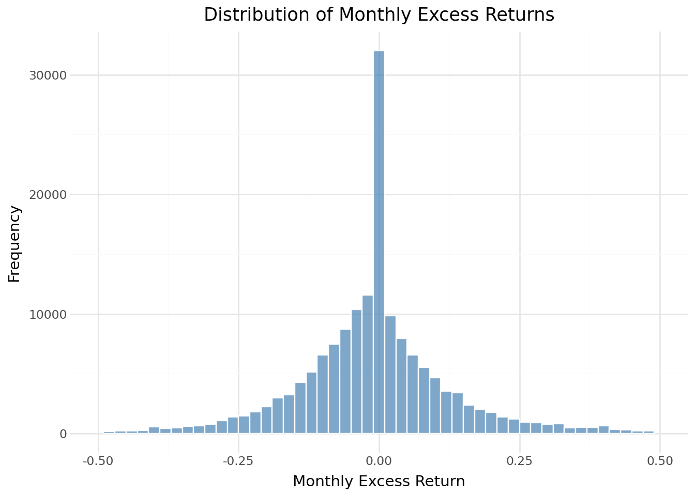

import pandas as pd
import numpy as np
import sqlite3
from datetime import datetime
from io import BytesIO
from plotnine import *
from mizani.formatters import comma_format, percent_format3 Dữ liệu Datacore
Chương này giới thiệu Datacore, nền tảng dữ liệu của Việt Nam dành cho nghiên cứu học thuật, doanh nghiệp và chính phủ. Datacore cung cấp các bộ dữ liệu tài chính và kinh tế toàn diện, bao gồm dữ liệu giao dịch lịch sử, các yếu tố cơ bản của công ty và các chỉ số kinh tế vĩ mô thiết yếu cho nghiên cứu tài chính có thể tái tạo. Chúng ta sử dụng Datacore làm nguồn dữ liệu chính xuyên suốt cuốn sách này.
3.1 Các tùy chọn truy cập dữ liệu
Độc giả có thể truy cập dữ liệu được sử dụng trong cuốn sách này thông qua một số kênh sau:
Gói đăng ký dành cho tổ chức: Nhiều trường đại học và viện nghiên cứu đăng ký sử dụng Datacore. Hãy liên hệ với thư viện hoặc văn phòng nghiên cứu của bạn để nhận thông tin đăng nhập. Nếu tổ chức của bạn chưa có gói đăng ký, hãy cân nhắc yêu cầu một gói thông qua quy trình mua sắm của thư viện — Datacore cung cấp giá ưu đãi cho mục đích học thuật.
Bộ dữ liệu demo: Datacore cung cấp bộ dữ liệu demo cho phép bạn chạy các ví dụ mã trong sách này với dữ liệu mẫu.
3.2 Tổng quan chương
Chương này được tổ chức như sau. Trước tiên, chúng ta thiết lập kết nối với cơ sở hạ tầng lưu trữ đám mây của Datacore. Sau đó, chúng ta tải xuống và chuẩn bị dữ liệu cơ bản của công ty, bao gồm các khoản mục bảng cân đối kế toán, các biến số báo cáo kết quả kinh doanh và các chỉ số phái sinh cần thiết cho nghiên cứu định giá tài sản. Tiếp theo, chúng ta truy xuất và xử lý dữ liệu giá cổ phiếu, tính toán lợi nhuận, vốn hóa thị trường và lợi nhuận vượt trội. Cuối cùng, chúng ta kết hợp các tập dữ liệu này và cung cấp số liệu thống kê mô tả đặc trưng cho thị trường chứng khoán Việt Nam.
3.3 Thiết lập môi trường
Chúng ta bắt đầu bằng cách tải các gói Python được sử dụng xuyên suốt chương này. Các gói cốt lõi bao gồm pandas để thao tác dữ liệu, numpy cho các phép toán số học và sqlite3 để quản lý cơ sở dữ liệu cục bộ. Chúng ta cũng nhập các thư viện trực quan hóa để tạo ra các hình ảnh chất lượng cao phục vụ cho việc xuất bản.
Chúng ta thiết lập kết nối đến cơ sở dữ liệu SQLite cục bộ, đóng vai trò là kho lưu trữ trung tâm cho tất cả dữ liệu đã được xử lý. Cơ sở dữ liệu này đã được giới thiệu trong chương trước và sẽ lưu trữ các tập dữ liệu đã được làm sạch để sử dụng trong các phân tích tiếp theo.
tidy_finance = sqlite3.connect(database="data/tidy_finance_python.sqlite")Chúng ta xác định phạm vi ngày tháng cho việc thu thập dữ liệu. Thị trường chứng khoán Việt Nam bắt đầu hoạt động vào tháng 7 năm 2000 với sự thành lập của Sở Giao dịch Chứng khoán Thành phố Hồ Chí Minh (HOSE), vì vậy giai đoạn mẫu của chúng ta bắt đầu từ năm 2000 và kéo dài đến hết năm 2024.
start_date = "2000-01-01"
end_date = "2024-12-31"3.4 Kết nối với Datacore
Datacore cung cấp dữ liệu thông qua hệ thống lưu trữ đối tượng dựa trên đám mây được xây dựng trên MinIO, một cơ sở hạ tầng lưu trữ tương thích với S3. Kiến trúc này cho phép truy cập hiệu quả, lập trình được vào các tập dữ liệu lớn mà không bị hạn chế bởi các kết nối cơ sở dữ liệu truyền thống. Để truy cập dữ liệu, bạn cần thông tin xác thực do Datacore cung cấp khi đăng ký: URL điểm cuối, khóa truy cập và khóa bí mật.
Lớp sau đây thiết lập kết nối với hệ thống lưu trữ của Datacore. Thông tin đăng nhập được lưu trữ dưới dạng biến môi trường để đảm bảo an toàn, tuân theo các thực tiễn tốt nhất về quản lý thông tin đăng nhập trong môi trường điện toán nghiên cứu.
import os
import boto3
from botocore.client import Config
class DatacoreConnection:
"""
Connection handler for Datacore's MinIO-based storage system.
This class manages authentication and provides methods for
accessing financial datasets stored in Datacore's cloud infrastructure.
Attributes
----------
s3 : boto3.client
S3-compatible client for interacting with Datacore storage
"""
def __init__(self):
"""Initialize connection using environment variables."""
self.MINIO_ENDPOINT = os.environ["MINIO_ENDPOINT"]
self.MINIO_ACCESS_KEY = os.environ["MINIO_ACCESS_KEY"]
self.MINIO_SECRET_KEY = os.environ["MINIO_SECRET_KEY"]
self.REGION = os.getenv("MINIO_REGION", "us-east-1")
self.s3 = boto3.client(
"s3",
endpoint_url=self.MINIO_ENDPOINT,
aws_access_key_id=self.MINIO_ACCESS_KEY,
aws_secret_access_key=self.MINIO_SECRET_KEY,
region_name=self.REGION,
config=Config(signature_version="s3v4"),
)
def test_connection(self):
"""Verify connection by listing available buckets."""
response = self.s3.list_buckets()
print("Connected successfully. Available buckets:")
for bucket in response.get("Buckets", []):
print(f" - {bucket['Name']}")
def list_objects(self, bucket_name, prefix=""):
"""List objects in a bucket with optional prefix filter."""
response = self.s3.list_objects_v2(
Bucket=bucket_name,
Prefix=prefix
)
return [obj["Key"] for obj in response.get("Contents", [])]
def read_excel(self, bucket_name, key):
"""Read an Excel file from Datacore storage."""
obj = self.s3.get_object(Bucket=bucket_name, Key=key)
return pd.read_excel(BytesIO(obj["Body"].read()))
def read_csv(self, bucket_name, key, **kwargs):
"""Read a CSV file from Datacore storage."""
obj = self.s3.get_object(Bucket=bucket_name, Key=key)
return pd.read_csv(BytesIO(obj["Body"].read()), **kwargs)Sau khi định nghĩa lớp kết nối, chúng ta có thể thiết lập kết nối và xác minh quyền truy cập vào các kho dữ liệu của Datacore.
# Initialize connection
conn = DatacoreConnection()
conn.test_connection()
# Get bucket name from environment
bucket_name = os.environ["MINIO_BUCKET"]Connected successfully. Available buckets:
- dsteam-data
- rawbctc3.5 Dữ liệu cơ bản của công ty
Dữ liệu kế toán của các công ty là yếu tố thiết yếu cho việc phân tích danh mục đầu tư, xây dựng yếu tố và nghiên cứu định giá. Datacore cung cấp dữ liệu cơ bản toàn diện cho các công ty niêm yết của Việt Nam, bao gồm báo cáo tài chính hàng năm và hàng quý được lập theo Chuẩn mực Kế toán Việt Nam (VAS).
3.5.1 Hiểu về Báo cáo Tài chính Việt Nam
Trước khi xử lý dữ liệu, điều quan trọng là phải hiểu cấu trúc của báo cáo tài chính Việt Nam. Các công ty Việt Nam tuân theo Chuẩn mực kế toán Việt Nam (VAS), có nhiều điểm tương đồng với Chuẩn mực báo cáo tài chính quốc tế (IFRS) nhưng cũng có những khác biệt đáng chú ý:
Năm tài chính: Hầu hết các công ty Việt Nam sử dụng năm tài chính theo lịch dương, kết thúc vào ngày 31 tháng 12, mặc dù một số công ty (đặc biệt là trong lĩnh vực bán lẻ và nông nghiệp) sử dụng năm tài chính kết thúc vào ngày khác.
Tần suất báo cáo: Các công ty niêm yết phải công bố báo cáo tài chính hàng quý trong vòng 20 ngày kể từ ngày kết thúc quý và báo cáo kiểm toán hàng năm trong vòng 90 ngày kể từ ngày kết thúc năm tài chính.
Các định dạng đặc thù theo ngành: Các công ty trong lĩnh vực ngân hàng, bảo hiểm và chứng khoán tuân theo các định dạng báo cáo chuyên biệt, khác với định dạng tiêu chuẩn của ngành.
Tiền tệ: Tất cả các số liệu được báo cáo bằng Đồng Việt Nam (VND). Do giá trị danh nghĩa lớn (hàng triệu đến hàng nghìn tỷ VND), chúng ta thường quy đổi các số liệu thành hàng triệu hoặc hàng tỷ để dễ đọc hơn.
3.5.2 Tải xuống dữ liệu cơ bản
Datacore tổ chức dữ liệu cơ bản trong các tệp Excel được phân vùng theo khoảng thời gian để truy cập hiệu quả. Chúng ta tải xuống và ghép nối các tệp này để tạo ra một tập dữ liệu toàn diện bao gồm toàn bộ giai đoạn mẫu của chúng ta.
# Define paths to fundamentals data files
fundamentals_paths = [
"fundamental_annual_1767674486317/fundamental_annual_1.xlsx",
"fundamental_annual_1767674486317/fundamental_annual_2.xlsx",
"fundamental_annual_1767674486317/fundamental_annual_3.xlsx",
]
# Download and combine all files
fundamentals_list = []
for path in fundamentals_paths:
df_temp = conn.read_excel(bucket_name, path)
fundamentals_list.append(df_temp)
print(f"Downloaded: {path} ({len(df_temp):,} rows)")
df_fundamentals_raw = pd.concat(fundamentals_list, ignore_index=True)
print(f"\nTotal observations: {len(df_fundamentals_raw):,}")/home/mikenguyen/project/tidyfinance/.venv/lib/python3.13/site-packages/openpyxl/styles/stylesheet.py:237: UserWarning: Workbook contains no default style, apply openpyxl's defaultDownloaded: fundamental_annual_1767674486317/fundamental_annual_1.xlsx (10,000 rows)/home/mikenguyen/project/tidyfinance/.venv/lib/python3.13/site-packages/openpyxl/styles/stylesheet.py:237: UserWarning: Workbook contains no default style, apply openpyxl's defaultDownloaded: fundamental_annual_1767674486317/fundamental_annual_2.xlsx (10,000 rows)/home/mikenguyen/project/tidyfinance/.venv/lib/python3.13/site-packages/openpyxl/styles/stylesheet.py:237: UserWarning: Workbook contains no default style, apply openpyxl's defaultDownloaded: fundamental_annual_1767674486317/fundamental_annual_3.xlsx (2,821 rows)
Total observations: 22,8213.5.3 Nguyên tắc cơ bản về vệ sinh và tiêu chuẩn hóa
Dữ liệu cơ bản thô cần trải qua nhiều bước làm sạch để đảm bảo tính nhất quán và khả năng sử dụng. Chúng ta chuẩn hóa tên biến, xử lý các giá trị thiếu và tạo ra các biến dẫn xuất thường được sử dụng trong nghiên cứu định giá tài sản.
def clean_fundamentals(df):
"""
Clean and standardize company fundamentals data.
Parameters
----------
df : pd.DataFrame
Raw fundamentals data from Datacore
Returns
-------
pd.DataFrame
Cleaned fundamentals with standardized column names
"""
df = df.copy()
# Standardize identifiers
df["symbol"] = df["symbol"].astype(str).str.upper().str.strip()
df["year"] = pd.to_numeric(df["year"], errors="coerce").astype("Int64")
# Drop rows with missing identifiers
df = df.dropna(subset=["symbol", "year"])
# Define columns that should be numeric
numeric_columns = [
"total_asset", "total_equity", "total_liabilities",
"total_current_asset", "total_current_liabilities",
"is_net_revenue", "is_cogs", "is_manage_expense",
"is_interest_expense", "is_eat", "is_net_business_profit",
"na_tax_deferred", "nl_tax_deferred", "e_preferred_stock",
"capex", "total_cfo", "ca_cce", "ca_total_inventory",
"ca_acc_receiv", "cfo_interest_expense", "basic_eps",
"is_shareholders_eat", "cl_loan", "cl_finlease",
"cl_due_long_debt", "nl_loan", "nl_finlease",
"is_cos_of_sales", "e_equity"
]
for col in numeric_columns:
if col in df.columns:
df[col] = pd.to_numeric(df[col], errors="coerce")
# Handle duplicates: keep row with most non-missing values
df["_completeness"] = df.notna().sum(axis=1)
df = (df
.sort_values(["symbol", "year", "_completeness"])
.drop_duplicates(subset=["symbol", "year"], keep="last")
.drop(columns="_completeness")
.reset_index(drop=True)
)
return df
df_fundamentals = clean_fundamentals(df_fundamentals_raw)
print(f"After cleaning: {len(df_fundamentals):,} firm-year observations")
print(f"Unique firms: {df_fundamentals['symbol'].nunique():,}")After cleaning: 21,232 firm-year observations
Unique firms: 1,5543.5.4 Tạo các biến chuẩn hóa
Để tạo điều kiện so sánh với các nghiên cứu quốc tế và đảm bảo tính tương thích với các phương pháp định giá tài sản tiêu chuẩn, chúng ta tạo ra các biến số theo các quy ước đã được thiết lập trong tài liệu học thuật. Chúng ta đối chiếu các khoản mục báo cáo tài chính của Việt Nam với các giá trị tương đương trong Compustat khi có thể.
def create_standard_variables(df):
"""
Create standardized financial variables for asset pricing research.
This function maps Vietnamese financial statement items to standard
variable names used in the academic finance literature, following
conventions from Fama and French (1992, 1993, 2015).
Parameters
----------
df : pd.DataFrame
Cleaned fundamentals data
Returns
-------
pd.DataFrame
Fundamentals with standardized variables added
"""
df = df.copy()
# Fiscal date (assume December year-end)
df["datadate"] = pd.to_datetime(df["year"].astype(str) + "-12-31")
# === Balance Sheet Items ===
df["at"] = df["total_asset"] # Total assets
df["lt"] = df["total_liabilities"] # Total liabilities
df["seq"] = df["total_equity"] # Stockholders' equity
df["act"] = df["total_current_asset"] # Current assets
df["lct"] = df["total_current_liabilities"] # Current liabilities
# Common equity (fallback to total equity if not available)
df["ceq"] = df.get("e_equity", df["seq"])
# === Deferred Taxes ===
df["txditc"] = df.get("na_tax_deferred", 0).fillna(0) # Deferred tax assets
df["txdb"] = df.get("nl_tax_deferred", 0).fillna(0) # Deferred tax liab.
df["itcb"] = 0 # Investment tax credit (rare in Vietnam)
# === Preferred Stock ===
pref = df.get("e_preferred_stock", 0)
if isinstance(pref, pd.Series):
pref = pref.fillna(0)
df["pstk"] = pref
df["pstkrv"] = pref # Redemption value
df["pstkl"] = pref # Liquidating value
# === Income Statement Items ===
df["sale"] = df["is_net_revenue"] # Net sales/revenue
df["cogs"] = df.get("is_cogs", 0).fillna(0) # Cost of goods sold
df["xsga"] = df.get("is_manage_expense", 0).fillna(0) # SG&A expenses
df["xint"] = df.get("is_interest_expense", 0).fillna(0) # Interest expense
df["ni"] = df.get("is_eat", np.nan) # Net income
df["oibdp"] = df.get("is_net_business_profit", np.nan) # Operating income
# === Cash Flow Items ===
df["oancf"] = df.get("total_cfo", np.nan) # Operating cash flow
df["capx"] = df.get("capex", np.nan) # Capital expenditures
return df
df_fundamentals = create_standard_variables(df_fundamentals)3.5.5 Tính toán giá trị sổ sách và lợi nhuận
Giá trị sổ sách là một biến số quan trọng đối với các chiến lược đầu tư giá trị và việc xây dựng danh mục đầu tư theo yếu tố HML (Cao Trừ Thấp). Chúng ta tuân theo định nghĩa từ thư viện dữ liệu của Kenneth French, có tính đến thuế hoãn lại và cổ phiếu ưu đãi.
def compute_book_equity(df):
"""
Compute book equity following Fama-French conventions.
Book equity = Stockholders' equity
+ Deferred taxes and investment tax credit
- Preferred stock
Negative or zero book equity is set to missing, as book-to-market
ratios are undefined for such firms.
Parameters
----------
df : pd.DataFrame
Fundamentals with standardized variables
Returns
-------
pd.DataFrame
Fundamentals with book equity (be) added
"""
df = df.copy()
# Primary measure: stockholders' equity
# Fallback 1: common equity + preferred stock
# Fallback 2: total assets - total liabilities
seq_measure = (df["seq"]
.combine_first(df["ceq"] + df["pstk"])
.combine_first(df["at"] - df["lt"])
)
# Add deferred taxes
deferred_taxes = (df["txditc"]
.combine_first(df["txdb"] + df["itcb"])
.fillna(0)
)
# Subtract preferred stock (use redemption value as primary)
preferred = (df["pstkrv"]
.combine_first(df["pstkl"])
.combine_first(df["pstk"])
.fillna(0)
)
# Book equity calculation
df["be"] = seq_measure + deferred_taxes - preferred
# Set non-positive book equity to missing
df["be"] = df["be"].where(df["be"] > 0, np.nan)
return df
df_fundamentals = compute_book_equity(df_fundamentals)
# Summary statistics for book equity
print("Book Equity Summary Statistics (in million VND):")
print(df_fundamentals["be"].describe().round(2))Book Equity Summary Statistics (in million VND):
count 2.023500e+04
mean 1.031884e+12
std 4.705269e+12
min 4.404402e+07
25% 7.267610e+10
50% 1.803885e+11
75% 5.304653e+11
max 1.836314e+14
Name: be, dtype: float64Lợi nhuận hoạt động, được giới thiệu bởi Fama and French (2015), đo lường lợi nhuận của một công ty so với vốn chủ sở hữu trên sổ sách. Các công ty có lợi nhuận hoạt động cao hơn thường có tỷ suất sinh lời kỳ vọng cao hơn.
def compute_profitability(df):
"""
Compute operating profitability following Fama-French (2015).
Operating profitability = (Revenue - COGS - SG&A - Interest) / Book Equity
Parameters
----------
df : pd.DataFrame
Fundamentals with book equity computed
Returns
-------
pd.DataFrame
Fundamentals with operating profitability (op) added
"""
df = df.copy()
# Operating profit before taxes
operating_profit = (
df["sale"]
- df["cogs"].fillna(0)
- df["xsga"].fillna(0)
- df["xint"].fillna(0)
)
# Scale by book equity
df["op"] = operating_profit / df["be"]
# Winsorize extreme values (outside 1st and 99th percentiles)
lower = df["op"].quantile(0.01)
upper = df["op"].quantile(0.99)
df["op"] = df["op"].clip(lower=lower, upper=upper)
return df
df_fundamentals = compute_profitability(df_fundamentals)3.5.6 Tính toán Đầu tư
Đầu tư, được đo lường bằng sự tăng trưởng tài sản, nắm bắt hành vi đầu tư của các công ty. Fama and French (2015) ghi nhận rằng các công ty có tốc độ tăng trưởng tài sản cao (đầu tư tháo vát) thường có tỷ suất sinh lời trong tương lai thấp hơn.
def compute_investment(df):
"""
Compute investment (asset growth) following Fama-French (2015).
Investment = (Total Assets_t / Total Assets_{t-1}) - 1
Parameters
----------
df : pd.DataFrame
Fundamentals data
Returns
-------
pd.DataFrame
Fundamentals with investment (inv) added
"""
df = df.copy()
# Create lagged assets
df_lag = (df[["symbol", "year", "at"]]
.assign(year=lambda x: x["year"] + 1)
.rename(columns={"at": "at_lag"})
)
# Merge lagged values
df = df.merge(df_lag, on=["symbol", "year"], how="left")
# Compute investment (asset growth)
df["inv"] = df["at"] / df["at_lag"] - 1
# Set to missing if lagged assets non-positive
df["inv"] = df["inv"].where(df["at_lag"] > 0, np.nan)
return df
df_fundamentals = compute_investment(df_fundamentals)3.5.7 Tính toán tổng nợ
Trong báo cáo tài chính của Việt Nam, tổng nợ phải trả bao gồm các khoản mục không sinh lãi như khoản phải trả cho nhà cung cấp và thuế phải trả. Để phân tích đòn bẩy, chúng ta tính tổng nợ có lãi bằng cách cộng gộp các khoản vay và nghĩa vụ thuê.
def compute_total_debt(df):
"""
Compute total interest-bearing debt.
Total Debt = Short-term loans + Finance leases (current)
+ Current portion of long-term debt
+ Long-term loans + Finance leases (non-current)
Parameters
----------
df : pd.DataFrame
Fundamentals data
Returns
-------
pd.DataFrame
Fundamentals with total_debt added
"""
df = df.copy()
df["total_debt"] = (
df.get("cl_loan", 0).fillna(0) + # Short-term bank loans
df.get("cl_finlease", 0).fillna(0) + # Current finance leases
df.get("cl_due_long_debt", 0).fillna(0) + # Current portion LT debt
df.get("nl_loan", 0).fillna(0) + # Long-term bank loans
df.get("nl_finlease", 0).fillna(0) # Non-current finance leases
)
return df
df_fundamentals = compute_total_debt(df_fundamentals)3.5.8 Áp dụng bộ lọc
Chúng ta áp dụng các bộ lọc tiêu chuẩn để đảm bảo chất lượng dữ liệu: yêu cầu tài sản dương, doanh số bán hàng không âm và sự hiện diện của các biến cốt lõi cần thiết để xây dựng danh mục đầu tư.
# Keep only observations with required variables
required_vars = ["at", "lt", "seq", "sale"]
comp_vn = df_fundamentals.dropna(subset=required_vars)
# Apply quality filters
comp_vn = comp_vn.query("at > 0") # Positive assets
comp_vn = comp_vn.query("sale >= 0") # Non-negative sales
# Keep last observation per firm-year (in case of restatements)
comp_vn = (comp_vn
.sort_values("datadate")
.groupby(["symbol", "year"])
.tail(1)
.reset_index(drop=True)
)
# Diagnostic summary
print(f"Final sample: {len(comp_vn):,} firm-year observations")
print(f"Unique firms: {comp_vn['symbol'].nunique():,}")
print(f"Sample period: {comp_vn['year'].min()} - {comp_vn['year'].max()}")Final sample: 20,091 firm-year observations
Unique firms: 1,502
Sample period: 1998 - 20233.5.9 Lưu trữ dữ liệu
Chúng ta lưu trữ dữ liệu cơ bản đã chuẩn bị trong cơ sở dữ liệu SQLite cục bộ để sử dụng trong các chương tiếp theo.
comp_vn.to_sql(
name="comp_vn",
con=tidy_finance,
if_exists="replace",
index=False
)
print("Company fundamentals saved to database.")Company fundamentals saved to database.3.6 Dữ liệu giá cổ phiếu
Dữ liệu giá cổ phiếu là nền tảng của các phân tích dựa trên lợi nhuận trong tài chính thực nghiệm. Datacore cung cấp dữ liệu giá lịch sử toàn diện cho tất cả các chứng khoán được giao dịch trên HOSE, HNX và UPCoM, bao gồm cả giá điều chỉnh có tính đến các hành động của công ty.
3.6.1 Tải xuống dữ liệu giá
Chúng ta tải xuống dữ liệu giá lịch sử từ hệ thống lưu trữ của Datacore. Dữ liệu bao gồm các quan sát hàng ngày với giá mở cửa, giá cao nhất, giá thấp nhất, giá đóng cửa, khối lượng giao dịch và các yếu tố điều chỉnh.
# Download historical price data
prices_raw = conn.read_csv(
bucket_name,
"historycal_price/dataset_historical_price.csv",
low_memory=False
)
print(f"Downloaded {len(prices_raw):,} daily price observations")
print(f"Date range: {prices_raw['date'].min()} to {prices_raw['date'].max()}")Downloaded 4,307,791 daily price observations
Date range: 2010-01-04 to 2025-05-123.6.2 Xử lý dữ liệu giá
Chúng ta làm sạch dữ liệu giá và tính toán giá điều chỉnh có tính đến việc chia tách cổ phiếu, cổ tức bằng cổ phiếu và các hành động khác của công ty.
def process_price_data(df):
"""
Process raw price data from Datacore.
"""
df = df.copy()
# Parse dates
df["date"] = pd.to_datetime(df["date"])
# Standardize column names
df = df.rename(columns={
"open_price": "open",
"high_price": "high",
"low_price": "low",
"close_price": "close",
"vol_total": "volume"
})
# Compute adjusted close price
df["adjusted_close"] = df["close"] * df["adj_ratio"]
# Standardize symbol
df["symbol"] = df["symbol"].astype(str).str.upper().str.strip()
# Sort for return calculation
df = df.sort_values(["symbol", "date"])
# Add year and month
df["year"] = df["date"].dt.year
df["month"] = df["date"].dt.month
return df
prices = process_price_data(prices_raw)3.6.3 Tính toán Số lượng Cổ phiếu Hoạt động và Giá trị Thị trường
Giá trị thị trường được tính bằng sản phẩm của giá và số lượng cổ phiếu hoạt động. Vì Datacore cung cấp lợi nhuận trên mỗi cổ phiếu và lợi nhuận sau thuế, chúng ta có thể suy ra số lượng cổ phiếu hoạt động từ các biến số này.
def compute_shares_outstanding(fundamentals_df):
"""
Compute shares outstanding from fundamentals.
"""
shares = fundamentals_df.copy()
shares["shrout"] = shares["is_shareholders_eat"] / shares["basic_eps"]
shares = shares[["symbol", "year", "shrout"]].dropna()
return shares
shares_outstanding = compute_shares_outstanding(df_fundamentals)def add_market_cap(df, shares_df):
"""
Add market capitalization to price data.
"""
df = df.merge(shares_df, on=["symbol", "year"], how="left")
# Compute market cap (in million VND)
df["mktcap"] = (df["close"] * df["shrout"]) / 1_000_000
# Set zero or negative market cap to missing
df["mktcap"] = df["mktcap"].where(df["mktcap"] > 0, np.nan)
return df
prices = add_market_cap(prices, shares_outstanding)3.6.4 Tính Lợi Nhuận và Lợi Nhuận Kỳ Lượng
Chúng ta tính toán lợi nhuận sử dụng giá đóng cửa điều chỉnh để đảm bảo lợi nhuận phản ánh chính xác lợi nhuận tổng của cổ đông bao gồm cả cổ tức và các hành động của công ty.
3.6.4.1 Tạo Bộ Dữ Liệu Hàng Ngày
- Phiên bản tuần tự
def create_daily_dataset(df, annual_rf=0.04):
"""
Create daily price dataset with returns and excess returns.
"""
df = df.copy()
# Sort by symbol and date (critical for correct return calculation)
df = df.sort_values(["symbol", "date"]).reset_index(drop=True)
# Remove duplicate dates within each symbol (keep last observation)
df = df.drop_duplicates(subset=["symbol", "date"], keep="last")
# Compute daily returns
df["ret"] = df.groupby("symbol")["adjusted_close"].pct_change()
# Cap extreme negative returns
df["ret"] = df["ret"].clip(lower=-0.99)
# Daily risk-free rate (assuming 252 trading days)
df["risk_free"] = annual_rf / 252
# Excess returns
df["ret_excess"] = df["ret"] - df["risk_free"]
df["ret_excess"] = df["ret_excess"].clip(lower=-1.0)
# Lagged market cap
df["mktcap_lag"] = df.groupby("symbol")["mktcap"].shift(1)
return df
prices_daily = create_daily_dataset(prices)- Phiên bản song song
from joblib import Parallel, delayed
import os
def process_daily_symbol(symbol_df, annual_rf=0.04):
"""
Process a single symbol's daily data.
"""
df = symbol_df.copy()
# Sort by date (critical for correct return calculation)
df = df.sort_values("date").reset_index(drop=True)
# Remove duplicate dates (keep last observation if duplicates exist)
df = df.drop_duplicates(subset=["date"], keep="last")
# Compute daily returns
df["ret"] = df["adjusted_close"].pct_change()
# Replace infinite values with NaN
df["ret"] = df["ret"].replace([np.inf, -np.inf], np.nan)
# Cap extreme negative returns
df["ret"] = df["ret"].clip(lower=-0.99)
# Daily risk-free rate
df["risk_free"] = annual_rf / 252
# Excess returns
df["ret_excess"] = df["ret"] - df["risk_free"]
df["ret_excess"] = df["ret_excess"].clip(lower=-1.0)
# Lagged market cap
df["mktcap_lag"] = df["mktcap"].shift(1)
return df
def create_daily_dataset_parallel(df, annual_rf=0.04):
"""
Create daily price dataset using parallel processing.
"""
# Ensure data is sorted before splitting
df = df.sort_values(["symbol", "date"])
# Split by symbol
symbol_groups = [group for _, group in df.groupby("symbol")]
n_jobs = max(1, os.cpu_count() - 1)
print(f"Processing {len(symbol_groups):,} symbols using {n_jobs} cores...")
results = Parallel(n_jobs=n_jobs, verbose=1)(
delayed(process_daily_symbol)(group, annual_rf)
for group in symbol_groups
)
return pd.concat(results, ignore_index=True)
prices_daily = create_daily_dataset_parallel(prices)
# Quick validation
print("\nValidation checks:")
print(f"Any duplicate (symbol, date): {prices_daily.duplicated(subset=['symbol', 'date']).sum()}")
print(f"Sample of non-zero returns:")
print(prices_daily[prices_daily["ret"] != 0][["symbol", "date", "adjusted_close", "ret"]].head(10))
prices_daily.query("symbol == 'FPT'")[["symbol", "date", "adjusted_close", "ret"]].head(3)Processing 1,837 symbols using 87 cores...[Parallel(n_jobs=87)]: Using backend LokyBackend with 87 concurrent workers.
[Parallel(n_jobs=87)]: Done 26 tasks | elapsed: 7.8s
[Parallel(n_jobs=87)]: Done 276 tasks | elapsed: 10.5s
[Parallel(n_jobs=87)]: Done 626 tasks | elapsed: 11.7s
[Parallel(n_jobs=87)]: Done 1076 tasks | elapsed: 13.6s
[Parallel(n_jobs=87)]: Done 1626 tasks | elapsed: 16.0s
[Parallel(n_jobs=87)]: Done 1837 out of 1837 | elapsed: 16.6s finished
Validation checks:
Any duplicate (symbol, date): 0
Sample of non-zero returns:
symbol date adjusted_close ret
0 A32 2018-10-23 44.574418 NaN
27 A32 2018-11-29 55.072640 0.235521
30 A32 2018-12-04 48.188560 -0.125000
43 A32 2018-12-21 51.974804 0.078571
49 A32 2019-01-02 55.072640 0.059603
53 A32 2019-01-08 50.030370 -0.091557
74 A32 2019-02-13 44.289180 -0.114754
75 A32 2019-02-14 41.008500 -0.074074
78 A32 2019-02-19 36.087480 -0.120000
91 A32 2019-03-08 41.336568 0.145455| symbol | date | adjusted_close | ret | |
|---|---|---|---|---|
| 1146076 | FPT | 2010-01-04 | 1170.9885 | NaN |
| 1146077 | FPT | 2010-01-05 | 1170.9885 | 0.000000 |
| 1146078 | FPT | 2010-01-06 | 1149.6978 | -0.018182 |
# Select columns
daily_columns = [
"symbol", "date", "year", "month",
"open", "high", "low", "close", "volume",
"adjusted_close", "shrout", "mktcap", "mktcap_lag",
"ret", "risk_free", "ret_excess"
]
prices_daily = prices_daily[daily_columns]
# Remove observations with missing essential variables
prices_daily = prices_daily.dropna(subset=["ret_excess", "mktcap", "mktcap_lag"])
print("Daily Return Summary Statistics:")
print(prices_daily["ret"].describe().round(4))
print(f"\nFinal daily sample: {len(prices_daily):,} observations")Daily Return Summary Statistics:
count 3.462157e+06
mean 3.000000e-04
std 4.480000e-02
min -9.900000e-01
25% -4.900000e-03
50% 0.000000e+00
75% 4.000000e-03
max 3.250000e+01
Name: ret, dtype: float64
Final daily sample: 3,462,157 observations3.6.4.2 Tạo Dữ liệu Tháng
Đối với lợi nhuận hàng tháng, chúng ta tính toán lợi nhuận trực tiếp từ giá điều chỉnh cuối tháng thay vì lãi kép lợi nhuận hàng ngày. Điều này tránh được sai sót do lãi kép từ các ngày thiếu và là phương pháp tiêu chuẩn trong tài chính thực nghiệm.
- Phiên bản tuần tự
def create_monthly_dataset(df, annual_rf=0.04):
"""
Create monthly price dataset with returns computed from
month-end to month-end adjusted prices.
"""
df = df.copy()
# Sort by symbol and date (critical for correct return calculation)
df = df.sort_values(["symbol", "date"]).reset_index(drop=True)
# Remove duplicate dates within each symbol (keep last observation)
df = df.drop_duplicates(subset=["symbol", "date"], keep="last")
# Get month-end observations
monthly = (df
.groupby("symbol")
.resample("ME", on="date")
.agg({
"open": "first", # First day open
"high": "max", # Monthly high
"low": "min", # Monthly low
"close": "last", # Last day close
"volume": "sum", # Total monthly volume
"adjusted_close": "last", # Month-end adjusted price
"shrout": "last", # Month-end shares outstanding
"mktcap": "last", # Month-end market cap
"year": "last",
"month": "last"
})
.reset_index()
)
# Remove duplicate (symbol, date) after resampling (safety check)
monthly = monthly.drop_duplicates(subset=["symbol", "date"], keep="last")
# Sort again after resampling
monthly = monthly.sort_values(["symbol", "date"]).reset_index(drop=True)
# Compute monthly returns from month-end to month-end adjusted prices
monthly["ret"] = monthly.groupby("symbol")["adjusted_close"].pct_change()
# Cap extreme returns
monthly["ret"] = monthly["ret"].clip(lower=-0.99)
# Monthly risk-free rate
monthly["risk_free"] = annual_rf / 12
# Excess returns
monthly["ret_excess"] = monthly["ret"] - monthly["risk_free"]
monthly["ret_excess"] = monthly["ret_excess"].clip(lower=-1.0)
# Lagged market cap for portfolio weighting
monthly["mktcap_lag"] = monthly.groupby("symbol")["mktcap"].shift(1)
return monthly
prices_monthly = create_monthly_dataset(prices)- Phiên bản song song
from joblib import Parallel, delayed
import os
def process_monthly_symbol(symbol_df, annual_rf=0.04):
"""
Process a single symbol's data to monthly frequency.
"""
df = symbol_df.copy()
# Sort by date (critical for correct return calculation)
df = df.sort_values("date").reset_index(drop=True)
# Remove duplicate dates (keep last observation if duplicates exist)
df = df.drop_duplicates(subset=["date"], keep="last")
# Set date as index for resampling
df = df.set_index("date")
# Resample to monthly
monthly = df.resample("ME").agg({
"symbol": "last",
"open": "first",
"high": "max",
"low": "min",
"close": "last",
"volume": "sum",
"adjusted_close": "last",
"shrout": "last",
"mktcap": "last",
"year": "last",
"month": "last"
}).reset_index()
# Remove rows where symbol is NaN (months with no trading)
monthly = monthly.dropna(subset=["symbol"])
# Sort by date
monthly = monthly.sort_values("date").reset_index(drop=True)
# Compute monthly returns
monthly["ret"] = monthly["adjusted_close"].pct_change()
# Replace infinite values with NaN
monthly["ret"] = monthly["ret"].replace([np.inf, -np.inf], np.nan)
# Cap extreme returns
monthly["ret"] = monthly["ret"].clip(lower=-0.99)
# Monthly risk-free rate
monthly["risk_free"] = annual_rf / 12
# Excess returns
monthly["ret_excess"] = monthly["ret"] - monthly["risk_free"]
monthly["ret_excess"] = monthly["ret_excess"].clip(lower=-1.0)
# Lagged market cap
monthly["mktcap_lag"] = monthly["mktcap"].shift(1)
return monthly
def create_monthly_dataset_parallel(df, annual_rf=0.04):
"""
Create monthly price dataset using parallel processing.
"""
# Ensure data is sorted before splitting
df = df.sort_values(["symbol", "date"])
# Split by symbol
symbol_groups = [group for _, group in df.groupby("symbol")]
n_jobs = max(1, os.cpu_count() - 1)
print(f"Processing {len(symbol_groups):,} symbols using {n_jobs} cores...")
results = Parallel(n_jobs=n_jobs, verbose=1)(
delayed(process_monthly_symbol)(group, annual_rf)
for group in symbol_groups
)
return pd.concat(results, ignore_index=True)
prices_monthly = create_monthly_dataset_parallel(prices)
# Validation checks
print("\nValidation checks:")
print(f"Any duplicate (symbol, date): {prices_monthly.duplicated(subset=['symbol', 'date']).sum()}")
print(f"\nSample of non-zero returns:")
print(prices_monthly[prices_monthly["ret"] != 0][["symbol", "date", "adjusted_close", "ret"]].head(10))
prices_monthly.query("symbol == 'FPT'")[["symbol", "date", "adjusted_close", "ret"]].head(3)Processing 1,837 symbols using 87 cores...[Parallel(n_jobs=87)]: Using backend LokyBackend with 87 concurrent workers.
[Parallel(n_jobs=87)]: Done 26 tasks | elapsed: 0.2s
[Parallel(n_jobs=87)]: Done 378 tasks | elapsed: 1.8s
[Parallel(n_jobs=87)]: Done 1078 tasks | elapsed: 4.5s
[Parallel(n_jobs=87)]: Done 1664 out of 1837 | elapsed: 7.0s remaining: 0.7s
[Parallel(n_jobs=87)]: Done 1837 out of 1837 | elapsed: 7.7s finished
Validation checks:
Any duplicate (symbol, date): 0
Sample of non-zero returns:
symbol date adjusted_close ret
0 A32 2018-10-31 44.574418 NaN
1 A32 2018-11-30 55.072640 0.235521
2 A32 2018-12-31 51.974804 -0.056250
3 A32 2019-01-31 50.030370 -0.037411
4 A32 2019-02-28 36.087480 -0.278689
5 A32 2019-03-31 41.828670 0.159091
7 A32 2019-05-31 43.304976 0.035294
8 A32 2019-06-30 35.929125 -0.170323
9 A32 2019-07-31 37.525975 0.044444
10 A32 2019-08-31 38.324400 0.021277| symbol | date | adjusted_close | ret | |
|---|---|---|---|---|
| 55963 | FPT | 2010-01-31 | 1092.9226 | NaN |
| 55964 | FPT | 2010-02-28 | 1107.1164 | 0.012987 |
| 55965 | FPT | 2010-03-31 | 1185.1823 | 0.070513 |
# Select columns (same structure as daily)
monthly_columns = [
"symbol", "date", "year", "month",
"open", "high", "low", "close", "volume",
"adjusted_close", "shrout", "mktcap", "mktcap_lag",
"ret", "risk_free", "ret_excess"
]
prices_monthly = prices_monthly[monthly_columns]
# Remove observations with missing essential variables
prices_monthly = prices_monthly.dropna(subset=["ret_excess", "mktcap", "mktcap_lag"])
print("Monthly Return Summary Statistics:")
print(prices_monthly["ret"].describe().round(4))
print(f"\nFinal monthly sample: {len(prices_monthly):,} observations")Monthly Return Summary Statistics:
count 165499.0000
mean 0.0042
std 0.1862
min -0.9900
25% -0.0703
50% 0.0000
75% 0.0553
max 12.7500
Name: ret, dtype: float64
Final monthly sample: 165,499 observations3.6.5 Lưu trữ dữ liệu giá
prices_daily.to_sql(
name="prices_daily",
con=tidy_finance,
if_exists="replace",
index=False
)
print("Daily price data saved to database.")
prices_monthly.to_sql(
name="prices_monthly",
con=tidy_finance,
if_exists="replace",
index=False
)
print("Monthly price data saved to database.")3.7 Thống kê mô tả
Trước khi tiến hành phân tích giá tài sản, chúng ta xem xét các đặc điểm của mẫu để hiểu sự phát triển và thành phần của thị trường chứng khoán Việt Nam.
3.7.1 Sự phát triển của thị trường theo thời gian
Trước tiên, chúng ta kiểm tra số lượng chứng khoán niêm yết đã tăng lên như thế nào theo thời gian.
securities_over_time = (prices_monthly
.groupby("date")
.agg(
n_securities=("symbol", "nunique"),
total_mktcap=("mktcap", "sum")
)
.reset_index()
)securities_figure = (
ggplot(securities_over_time, aes(x="date", y="n_securities"))
+ geom_line(color="steelblue", size=1)
+ labs(
x="",
y="Number of Securities",
title="Growth of Vietnamese Stock Market"
)
+ scale_x_datetime(date_breaks="2 years", date_labels="%Y")
+ scale_y_continuous(labels=comma_format())
+ theme_minimal()
)
securities_figure.show()
3.7.2 Sự phát triển của Tổng vốn hóa thị trường
Tổng vốn hóa thị trường phản ánh quy mô và sự phát triển chung của thị trường chứng khoán Việt Nam.
mktcap_figure = (
ggplot(securities_over_time, aes(x="date", y="total_mktcap / 1000"))
+ geom_line(color="darkgreen", size=1)
+ labs(
x="",
y="Market Cap (Trillion VND)",
title="Total Market Capitalization of Vietnamese Equities"
)
+ scale_x_datetime(date_breaks="2 years", date_labels="%Y")
+ scale_y_continuous(labels=comma_format())
+ theme_minimal()
)
mktcap_figure.show()
3.7.3 Phân phối lợi nhuận
Việc hiểu rõ sự phân bố lợi nhuận hàng tháng giúp xác định các vấn đề tiềm ẩn về chất lượng dữ liệu và đánh giá rủi ro thị trường.
return_distribution = (
ggplot(prices_monthly, aes(x="ret_excess"))
+ geom_histogram(
binwidth=0.02,
fill="steelblue",
color="white",
alpha=0.7
)
+ labs(
x="Monthly Excess Return",
y="Frequency",
title="Distribution of Monthly Excess Returns"
)
+ scale_x_continuous(limits=(-0.5, 0.5))
+ theme_minimal()
)
return_distribution.show()/home/mikenguyen/project/tidyfinance/.venv/lib/python3.13/site-packages/plotnine/layer.py:293: PlotnineWarning: stat_bin : Removed 3264 rows containing non-finite values.
/home/mikenguyen/project/tidyfinance/.venv/lib/python3.13/site-packages/plotnine/layer.py:374: PlotnineWarning: geom_histogram : Removed 2 rows containing missing values.
3.7.4 Phạm vi Giá Trị Sổ Sách của Vốn Chủ Sở Hữu
Vốn chủ sở hữu sổ sách là điều cần thiết để xây dựng danh mục đầu tư giá trị. Chúng ta kiểm tra phần nào trong mẫu của chúng ta có dữ liệu vốn chủ sở hữu sổ sách theo thời gian.
# Merge prices with fundamentals
coverage_data = (prices_monthly
.assign(year=lambda x: x["date"].dt.year)
.groupby(["symbol", "year"])
.tail(1)
.merge(comp_vn[["symbol", "year", "be"]],
on=["symbol", "year"],
how="left")
)
# Compute coverage by year
be_coverage = (coverage_data
.groupby("year")
.apply(lambda x: pd.Series({
"share_with_be": x["be"].notna().mean()
}))
.reset_index()
)
coverage_figure = (
ggplot(be_coverage, aes(x="year", y="share_with_be"))
+ geom_line(color="darkorange", size=1)
+ geom_point(color="darkorange", size=2)
+ labs(
x="Year",
y="Share with Book Equity",
title="Coverage of Book Equity Data"
)
+ scale_y_continuous(labels=percent_format(), limits=(0, 1))
+ theme_minimal()
)
coverage_figure.show()
3.8 Hợp nhất cổ phiếu và dữ liệu cơ bản
Bước cuối cùng liên kết dữ liệu giá với dữ liệu cơ bản bằng cách sử dụng biểu tượng chứng khoán làm mã định danh chung. Bộ dữ liệu hợp nhất này tạo cơ sở để xây dựng danh mục đầu tư được sắp xếp theo đặc điểm của công ty.
# Example: Create merged dataset for end-of-June each year
merged_data = (prices_monthly
.query("month == 6")
.merge(
comp_vn[["symbol", "year", "be", "op", "inv", "at"]],
on=["symbol", "year"],
how="left",
suffixes=("", "_fundamental")
)
)
# Convert BE from VND to BILLION VND
merged_data["be"] = merged_data["be"] / 1e9
# Compute book-to-market ratio
merged_data["bm"] = merged_data["be"] / merged_data["mktcap"]
merged_data.loc[
(merged_data["bm"] <= 0) |
(merged_data["bm"] > 20),
"bm"
] = pd.NA
merged_data["bm"].describe(percentiles=[.01, .1, .5, .9, .99])
print(f"Merged observations: {len(merged_data):,}")
print(f"With book-to-market: {merged_data['bm'].notna().sum():,}")
merged_data.head(3)
merged_data.describe()
merged_dataMerged observations: 13,756
With book-to-market: 12,859| symbol | date | year | month | open | high | low | close | volume | adjusted_close | ... | mktcap | mktcap_lag | ret | risk_free | ret_excess | be | op | inv | at | bm | |
|---|---|---|---|---|---|---|---|---|---|---|---|---|---|---|---|---|---|---|---|---|---|
| 0 | A32 | 2019-06-30 | 2019.0 | 6.0 | 26.4 | 26.4 | 21.0 | 22.5 | 3700 | 35.929125 | ... | 153.000 | 179.52 | -0.170323 | 0.003333 | -0.173657 | 223.612748 | 0.232362 | -0.072329 | 4.349303e+11 | 1.461521 |
| 1 | A32 | 2020-06-30 | 2020.0 | 6.0 | 25.0 | 26.3 | 24.5 | 26.3 | 7500 | 38.811173 | ... | 178.840 | 187.00 | -0.067977 | 0.003333 | -0.071311 | 242.216943 | 0.195565 | 0.122698 | 4.882955e+11 | 1.354378 |
| 2 | A32 | 2021-06-30 | 2021.0 | 6.0 | 30.2 | 37.0 | 29.5 | 32.0 | 78400 | 45.363520 | ... | 217.600 | 214.20 | 0.015873 | 0.003333 | 0.012540 | 238.385190 | 0.157723 | 0.081581 | 5.281309e+11 | 1.095520 |
| 3 | A32 | 2022-06-30 | 2022.0 | 6.0 | 30.9 | 35.5 | 25.0 | 35.3 | 15200 | 47.503210 | ... | 240.040 | 210.12 | 0.142395 | 0.003333 | 0.139061 | 215.399735 | 0.172085 | 0.036584 | 5.474523e+11 | 0.897349 |
| 4 | A32 | 2023-06-30 | 2023.0 | 6.0 | 30.1 | 33.5 | 29.2 | 29.4 | 2400 | 35.064204 | ... | 199.920 | 204.68 | -0.023256 | 0.003333 | -0.026589 | 222.024135 | 0.174658 | -0.076752 | 5.054342e+11 | 1.110565 |
| ... | ... | ... | ... | ... | ... | ... | ... | ... | ... | ... | ... | ... | ... | ... | ... | ... | ... | ... | ... | ... | ... |
| 13751 | YTC | 2019-06-30 | 2019.0 | 6.0 | 70.0 | 79.9 | 70.0 | 79.9 | 38900 | 171.451817 | ... | 246.092 | 215.60 | 0.141429 | 0.003333 | 0.138095 | 59.901389 | 0.738190 | -0.021758 | 7.521980e+11 | 0.243411 |
| 13752 | YTC | 2020-06-30 | 2020.0 | 6.0 | 88.5 | 88.5 | 77.0 | 87.0 | 150640 | 180.966960 | ... | 267.960 | 272.58 | -0.016949 | 0.003333 | -0.020282 | 13.459082 | -0.458548 | 0.323501 | 9.955348e+11 | 0.050228 |
| 13753 | YTC | 2021-06-30 | 2021.0 | 6.0 | 76.0 | 115.5 | 61.0 | 61.0 | 34100 | 126.884880 | ... | 187.880 | 234.08 | -0.197368 | 0.003333 | -0.200702 | 21.746595 | 0.539521 | -0.215694 | 7.808035e+11 | 0.115747 |
| 13754 | YTC | 2022-06-30 | 2022.0 | 6.0 | 68.0 | 68.0 | 65.0 | 65.5 | 200 | 136.245240 | ... | 201.740 | 209.44 | -0.036765 | 0.003333 | -0.040098 | 32.403055 | 0.483088 | 0.182911 | 9.236206e+11 | 0.160618 |
| 13755 | YTC | 2023-06-30 | 2023.0 | 6.0 | 59.0 | 59.0 | 59.0 | 59.0 | 49545 | 122.724720 | ... | 181.720 | 181.72 | 0.000000 | 0.003333 | -0.003333 | 38.976624 | 0.450157 | 0.017930 | 9.401815e+11 | 0.214487 |
13756 rows × 21 columns
from plotnine import *
import numpy as np
bm_plot_data = (
merged_data[["bm"]]
.dropna()
.assign(bm_plot=lambda x: x["bm"].clip(upper=10))
)
(
ggplot(bm_plot_data, aes(x="bm_plot")) +
geom_histogram(bins=80) +
labs(
title="Distribution of Book to Market Ratios",
x="Book to Market (capped at 10 for plotting)",
y="Number of firms"
) +
theme_minimal()
)
size_plot_data = (
merged_data[["mktcap_lag"]]
.dropna()
.assign(log_size=lambda x: np.log(x["mktcap_lag"]))
)
(
ggplot(size_plot_data, aes(x="log_size")) +
geom_histogram(bins=80) +
labs(
title="Distribution of Log Market Capitalization",
x="Log Market Cap",
y="Number of firms"
) +
theme_minimal()
)
scatter_data = (
merged_data[["be", "mktcap_lag"]]
.dropna()
.assign(
log_be=lambda x: np.log(x["be"]),
log_me=lambda x: np.log(x["mktcap_lag"])
)
)
(
ggplot(scatter_data, aes(x="log_me", y="log_be")) +
geom_point(alpha=0.2) +
labs(
title="Log Book Equity vs Log Market Equity",
x="Log Market Cap",
y="Log Book Equity"
) +
theme_minimal()
)
3.9 Những điểm chính cần ghi nhớ
Datacore cung cấp quyền truy cập thống nhất vào dữ liệu tài chính Việt Nam thông qua cơ sở hạ tầng điện toán đám mây hiện đại, loại bỏ nhu cầu tổng hợp dữ liệu từ nhiều nguồn phân tán.
Các yếu tố cơ bản của công ty từ Datacore bao gồm bảng cân đối kế toán, báo cáo kết quả kinh doanh và dữ liệu lưu chuyển tiền tệ toàn diện được lập theo Chuẩn mực Kế toán Việt Nam, mà chúng ta đối chiếu với các biến số chuẩn được sử dụng trong nghiên cứu quốc tế.
Cách tính giá trị sổ sách tuân theo phương pháp Fama-French, có tính đến thuế hoãn lại và cổ phiếu ưu đãi để đảm bảo tính tương đồng với các nghiên cứu tại Hoa Kỳ.
Dữ liệu giá cổ phiếu bao gồm các yếu tố điều chỉnh cho các hoạt động của công ty, cho phép tính toán lợi nhuận chính xác trong thời gian dài.
Tần suất hàng tháng là tiêu chuẩn trong nghiên cứu định giá tài sản, giúp giảm nhiễu trong khi vẫn duy trì đủ số liệu quan sát để suy luận thống kê.
Phương pháp ước tính lãi suất phi rủi ro sử dụng lợi suất trái phiếu chính phủ Việt Nam làm thước đo thay thế, do không có chuỗi lãi suất ngắn hạn tiêu chuẩn tương đương với tín phiếu kho bạc Mỹ.
Kiểm định chất lượng dữ liệu thông qua thống kê mô tả và trực quan hóa giúp xác định các vấn đề tiềm ẩn trước khi tiến hành phân tích chính thức.
Xử lý theo lô cho phép xử lý hiệu quả các tập dữ liệu lớn hàng ngày mà nếu không sẽ vượt quá giới hạn bộ nhớ.